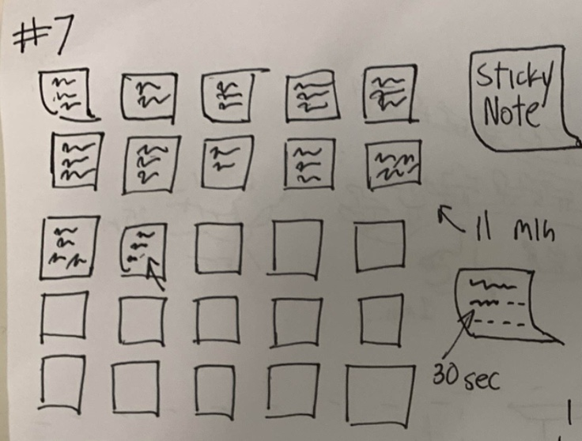
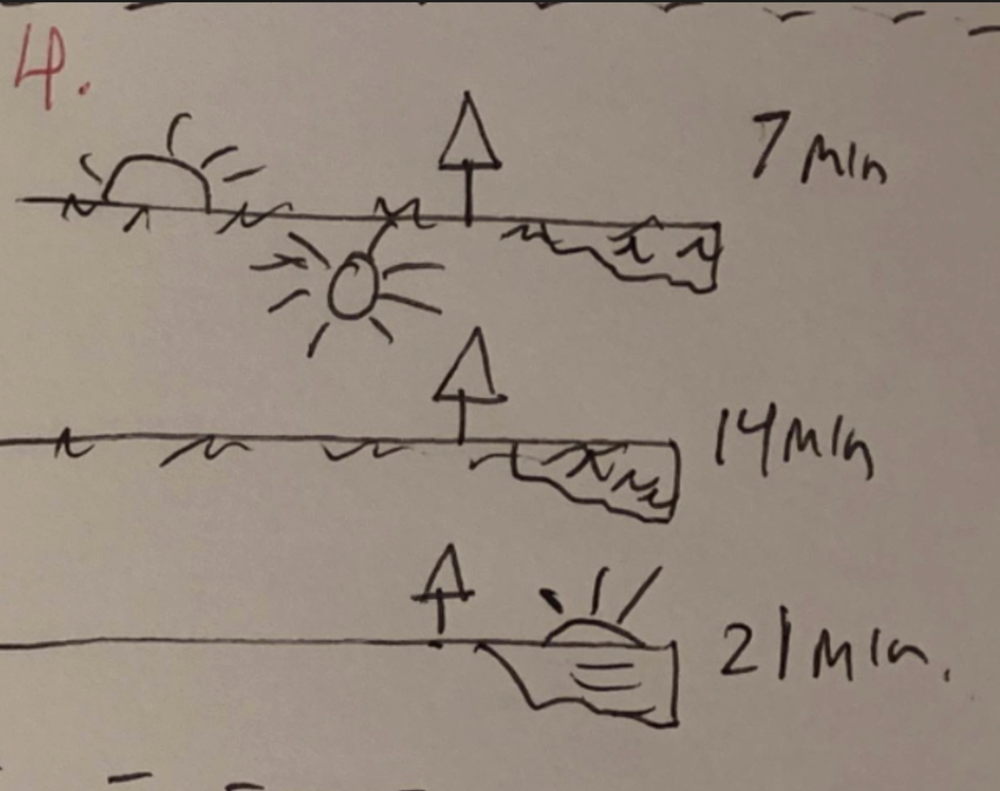
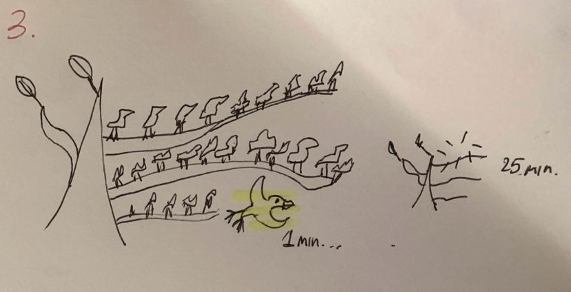

Sketch narrative — Sticky Notes Grid (Pomodoro)
This clock shows 25 minutes as a 5×5 grid of sticky notes—each note is one minute. I wanted something that feels like progress without staring at a countdown clock. When a minute is active, seconds are drawn as little handwriting strokes inside the note. Early versions used a solid white fill bar, but classmates said it looked like a loading bar, so I switched to “pen” strokes so it feels like someone writing on the note. I also had a problem where it was hard to find the current minute, so I added a clearer outline and a tiny label like “(m+1)/25.” Finished notes get brighter so the user can see what’s done, and future notes stay faint. It’s meant to be something you can keep at the side of the screen while working without it demanding attention.
- Context: Browser-based studying; ambient awareness without numeric pressure.
- Design decisions:
- 5×5 grid maps perfectly to 25 minutes—no legend.
- Yellow Post-it palette; future (dim) vs done (brighter).
- Active note gets a bold outline + small “(m+1)/25” label.
- Seconds draw left->right “writing” lines, not a loading bar.
- Future work: Hover tooltips per note; click to start break; high-contrast mode; optional numeric overlay.

Sketch evolution
Sketch narrative — Sun & Horizon
This sketch treats a 25-minute session as the sun moving left to right across a simple horizon. Instead of showing numbers, the idea is that you can just glance and understand roughly “how far” you are. The seconds are shown as a soft pulse around the sun so it doesn’t look frozen between minute jumps. While working on it, I added a sky gradient that slowly brightens as time goes on—it ended up looking like an early morning. I originally tried a vertical arc, but keeping the sun on a flat path was easier to read and didn’t pull attention away. Overall it’s just meant to be calm and low-stress: position = minutes, pulsing = seconds, and the color change gives a sense of progress without counting.
- Context: Ambient, low-distraction study aid.
- Design decisions:
- Sun’s x-position encodes minutes (glanceable).
- Pulsing halo encodes seconds (gentle motion).
- Sky color lerps from twilight->daylight as progress builds.
- Future work: Minute tick marks; subtle ground gradient; night/day break toggle.

Sketch evolution
Sketch narrative : Apples from Branch
This one has 25 apples hanging from a branch. Each minute, one apple falls and stays on the ground. It makes it obvious what’s done versus what’s left. I first tried a row of dots, but it looked too abstract, so I changed it to a branch with stems and leaves because it reads friendlier and more like a visual metaphor. The active apple has a small sway to show seconds passing. I also kept dropped apples on screen so progress is visible; they form a little row on the ground. The whole thing feels light and kind of playful, every minute you “earn” an apple, but still simple / non-distracting enough to use while studying.
- Context: Study sessions where minute-by-minute “events” are motivating.
- Design decisions:
- Branch + twigs instead of a rope line.
- Apples with stems/leaves; warm and readable.
- Fallen apples persist on the ground (progress stays visible).
- Subtle sway on the active apple encodes seconds.
- Future work: Gentle bounce on landing; small ground shadow; color-blind friendly patterns.

Sketch evolution
Adapted from Golan Levin, 2016-2018